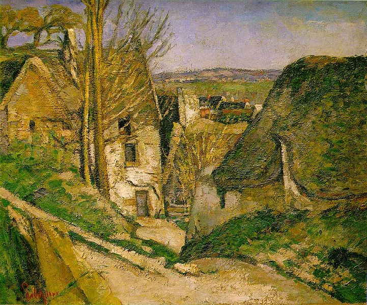
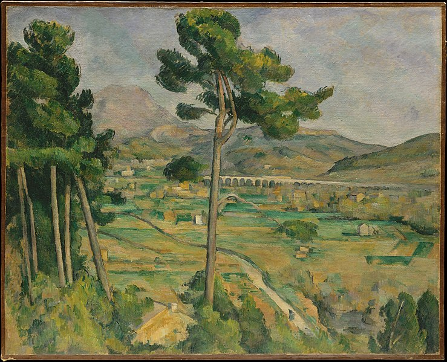

Aus Frankreich, Paul Cézanne war ein post-impressionistischer Maler. Er schaffte die Vorrausseztungen für die Transition der Kunst vom XIX. in dem XX. Jahrhundert

La maison du pendu
1873

Mont Sainte-Victoire
1882-1885
Houses in Provence: The Riaux Valley near L'Estaque